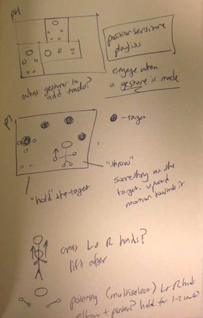
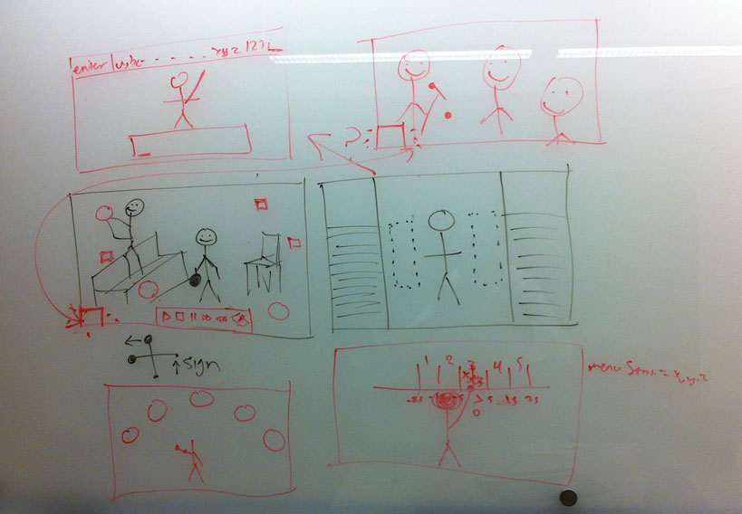
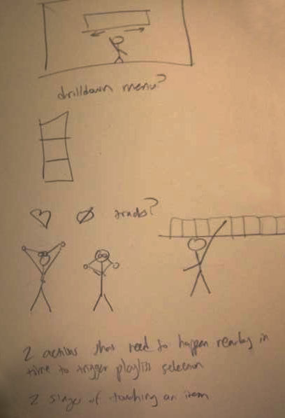

Designing gestures to select virtual targets via the sophisticated technologies embedded in the Kinect controller and its SDK presents unique problems that we would otherwise not encounter designing and developing interfaces for more conventional interface devices like mice, trackpads, or touchscreens. Best practices for designing such interfaces have yet to be established, and the inherent nature of the controller and its limitations demand a novel approach and paradigm for user interaction. Though daunting, we regard this challenge as an incredible opportunity to explore and hopefully influence how humans will one day interact with many of their devices--that is, through natural user interfaces, without the need to handle controllers physically.
Our group of five coalesced around the broad theme of music applications. At first we excitedly brainstormed, discussed, and illustrated use cases, user needs, and crazy solutions that addressed these use cases and user needs, ignoring Kinect's limitations. We asked ambitious, broad questions like: How could we augment the physical space of the room the Kinect and its user are in? How could we simultaneously engage and stimulate the user's attention and body? How can we reimagine the way the user interacts with and relates to his/her music? And we also asked simpler yet equally important questions like: what are unmistakable gestures that are not commonly acted out but are easily detected?
 caption  caption  captionTo refine our ideas, we reconsidered them in light of some of the Kinect's limitations, including the fact that it can only actively track the joints of two users and that there was a certain sweet spot for tracking users somewhere between 6' and 9' from the device. One of the greatest challenges we faced in designing gestures was to design them in a manner that made triggering them accidentally unlikely. Humans are constantly gesturing with their bodies, particularly in crowded social settings where a user would especially want to play music and interact with his/her music library. But over the course of a couple of group meetings during which we brainstormed, sketched, and toyed with the device, we settled on some gestures we all agreed would be effective to choose an item from a collection of items, which we would implement in the next phase of the project.
Both of the interactions we designed involve a timeout to select the target, in order to avoid false positives, and one of them requires the user to first prime the device for his/her gestures by raising his/her other hand. Our decision to use these interactions was in part influenced by the Xbox interfaces, which we consider to be the current, most established "best practices" for the Kinect sensor.
After the brainstorming and design phase of our project, we set up our development environments and divided the work to be done. Though none of us had experience with C#, the greatest hurdle of the implementation phase of our project was installing Windows 7, Visual Studio 2010, and the Kinect SDK. Many members of our group prefer to use Mac OS X, and these group members had to either partition their drives to install Boot Camp and Windows 7, obtain another computer with Windows 7 on it, or attempt to work from within a VM, which was strongly discouraged both in class and online.
Once we began coding, our project progressed swiftly. C#'s similarities to Java and the helpful class-provided starter code made it simple to learn to program for the Kinect. We were grateful for the Microsoft's Kinect SDK's built-in capability to track about 20 different joints (some more reliably than others). If we had gone another route and tried to use open-source Kinect SDK's for Mac OS X or Unix distributions, we wouldn't have had this luxury.
Keegan and Brad demonstrate the gestures we designed and implemented to select targets via the Kinect sensorGet our source code from https://github.com/nhippenmeyer/CS247, or download a .zip directly.
The two gesture controls we designed and implemented each have unqiue advantages and disadvantages, lending each one to a different use case. The first one only involves waving a single arm, which places very little cognitive strain on the user; the connection between pointing and selecting is clear and intuitive. The second gesture control demands using both hands, which is both physically and cognitively more taxing on the user, but is less likely to trigger false positives. Our video (above) shows a simple use case where users might use our gestures to navigate their music library.
Using the gestures we designed and implemented to control the Kinect was an exciting experience that further convinced us of the great potential for natural user interfaes. Now that we've learned the ropes, and gotten our feet wet, we can't wait to get down and dirty with Kinect.